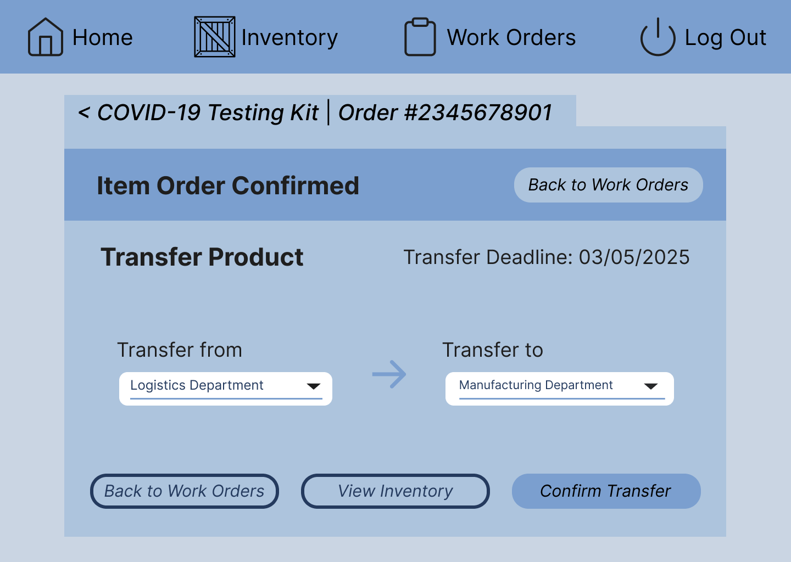
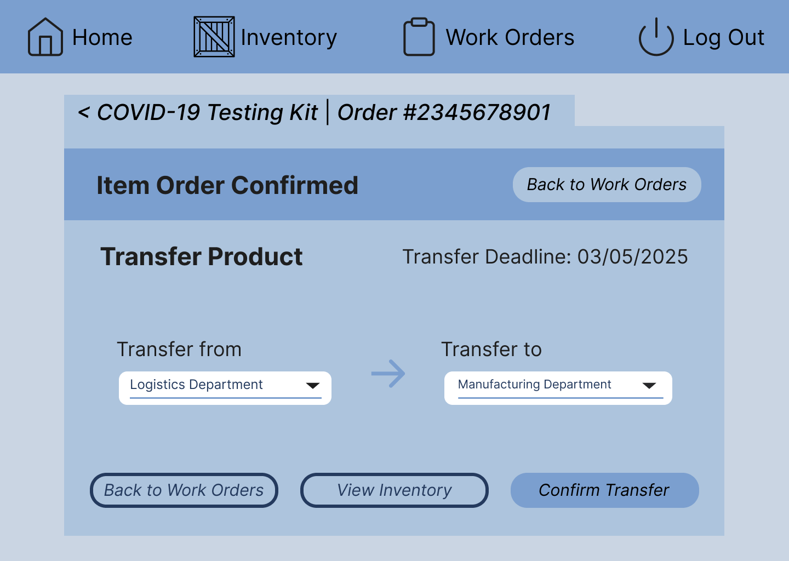
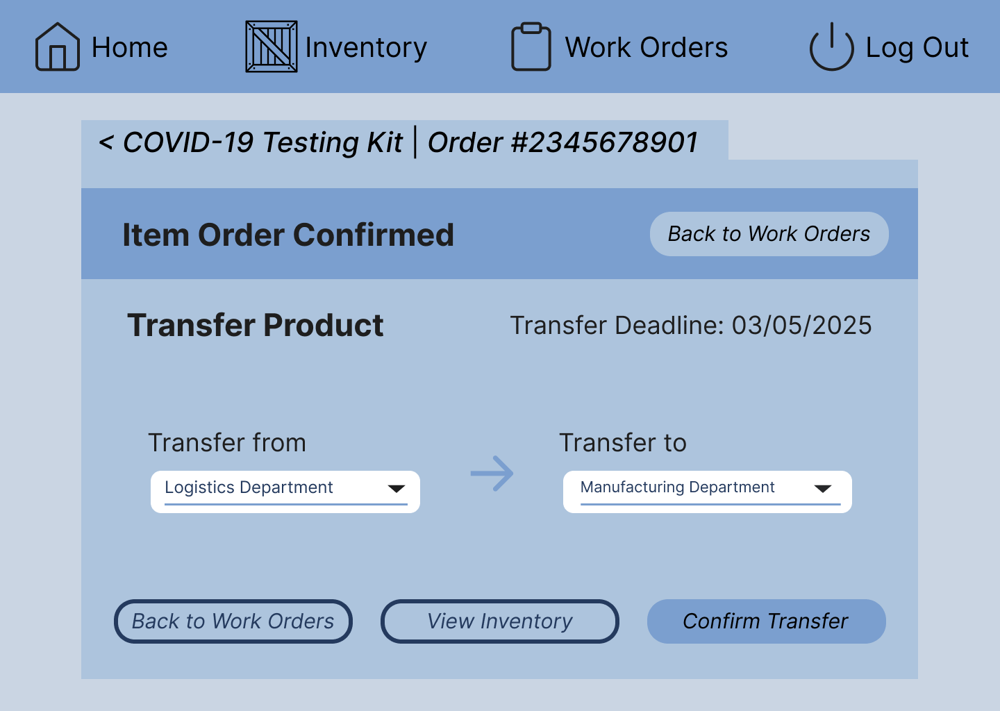

This case study explores the challenges biotech professionals face when using Microsoft Dynamics NAV for work order and inventory management. Our team focused on identifying pain points in the workflow and designing solutions to improve efficiency and usability.
BioLegend, a biotech company specializing in manufacturing and distributing biomedical research reagents, relies on software like Microsoft Dynamics NAV to track inventory, manage orders, and ensure accurate shipment of lab products. However, existing systems present a steep learning curve, require excessive manual input, and lead to inefficiencies in critical workflows. Through user research, we identified core usability problems and proposed an improved interface that balances efficiency and clarity.
Problem Statement
Microsoft Dynamics NAV is a powerful tool for managing biotech workflows but suffers from usability challenges, particularly for employees who need to navigate complex inventory management and order fulfillment processes.
Fragmented User Flow: Frequent pop-ups and multiple tabs disrupt workflow, forcing users to memorize product details instead of providing contextual guidance.
High Cognitive Load: Employees must manually track inventory levels and remember lot numbers while switching between screens, leading to errors.
Lack of Visual Aids: The interface is highly text-based, making it difficult for new employees to quickly learn the system and reducing overall efficiency.
User Research
To better understand user pain points, we conducted interviews and surveys with biotech professionals who regularly use Microsoft Dynamics NAV. Our research methods included:
Stakeholder Interviews: We interviewed lab technicians and inventory managers to uncover workflow inefficiencies.
Contextual Inquiry: Observed users performing daily tasks to identify friction points and bottlenecks.
Surveys: Collected feedback on common pain points and feature requests.
Key Findings:
High Learning Curve: New employees struggle to onboard due to a lack of visual aids and guidance.
Inefficient Task Switching: Users frequently switch between multiple tabs and screens to complete tasks.
Manual Data Entry Errors: Repetitive manual input leads to mistakes, increasing time spent on corrections.
Based on these findings, we focused on simplifying navigation, improving visual hierarchy, and enhancing automation to reduce user workload.
Design Process & UI Flow
Our design approach focused on streamlining the workflow and reducing cognitive load for users by implementing the following UI enhancements:
Introduced a simplified navigation system to minimize excessive tab switching.
Designed work order screens with clear visual hierarchies.
Implemented a search and filter function to quickly locate inventory items.
UI Flow Diagrams:
Flow 1: Order Creation ProcessFlow 2: Inventory Management Process
Competitive Audit
We analyzed competitor platforms to understand their strengths and weaknesses, focusing on how they handle inventory management and work order processing.
Competitor
Strengths
Weaknesses
Microsoft Dynamics NAV
Highly customizable, integrates finance, sales, and inventory
Complex interface, multiple tabs and pop-ups, steep learning curve
SAP S/4HANA
Comprehensive ERP, strong logistics integration
Complex interface, steep learning curve
Netsuite
Cloud-based, guided workflows, simplified UI
May not be customizable for unique needs
Trello
Simple and intuitive interface that is widely adopted
Not designed for complex workflows
Final High-Fidelity Prototype
The refined high-fidelity prototype includes adjustments based on user feedback:
Updated alert icons for better distinction between Low Stock and Expiration Alerts.
Realistic product data replaced placeholders for improved accuracy.
Better space utilization on work order and inventory screens.
Improved button visibility and layout adjustments for ease of use.
Final Screenshots:

Conclusion
Working on this project provided us insight into the struggles biotech professionals face with Microsoft Dynamics NAV. We focused on making their workflows smoother and less frustrating through better design.
Key Improvements:
Created workflows to cut down on unnecessary tab switching and manual data entry.
Designed a cleaner, more intuitive interface with improved visual hierarchy and search features.
Added automation to reduce errors and make order management more efficient.
What We Learned:
Talking to real users revealed issues we would not have noticed otherwise.
Finding the right balance between simplicity and functionality is crucial in enterprise tools.
Next Steps:
Explore ways to further automate repetitive tasks and reduce manual effort.
Consider integrating AI-driven guidance to help users complete complex workflows more efficiently.
 
